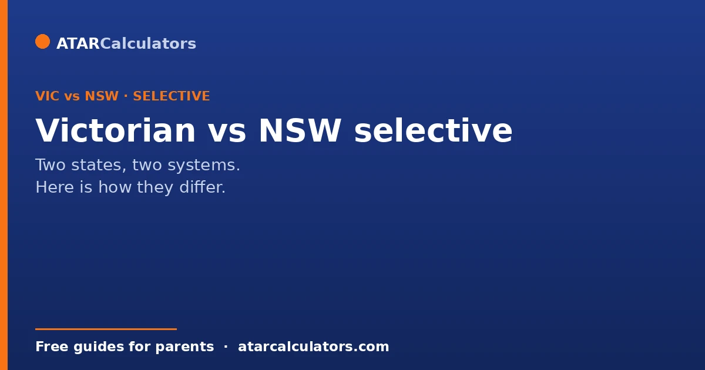
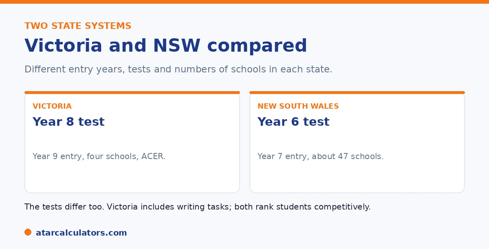

Here is the short version. NSW students sit the selective test in Year 6, for Year 7 entry, across about 47 selective high schools. Victorian students sit a different exam in Year 8, for Year 9 entry, across four selective schools. The NSW test, run through Cambridge, has four sections including writing. The Victorian test, run by ACER, covers reading and verbal reasoning, maths and numerical reasoning, and writing. Both rank students competitively, with no published cut-offs.
NSW and Victoria both have selective government schools, but they run entry quite differently. The year level, the test, and the number of schools all differ.
Below is a clear comparison. For the detail in each state, see our NSW guide and Victorian guide.
Key takeaways
- NSW: sit in Year 6, for Year 7 entry, about 47 schools.
- Victoria: sit in Year 8, for Year 9 entry, four schools.
- NSW has four sections, run through Cambridge.
- Victoria's exam is run by ACER, and includes writing.
- Both rank students competitively, with no published cut-offs.
- Both reward reasoning over memorised content.
Different entry years
The first difference is timing. In NSW, students sit the test in Year 6, for entry into a selective high school in Year 7. In Victoria, students sit the exam in Year 8, for entry in Year 9.

So a Victorian child applies two years later than a NSW child. This also means the Victorian exam sits at a higher year level, with content up to Year 8 rather than Year 6.
Different numbers of schools
The scale differs too. NSW has around 47 selective high schools, a mix of fully and partially selective. Victoria has four selective entry high schools: Melbourne High, Mac.Robertson, Nossal, and Suzanne Cory.
So NSW offers far more selective places overall, while Victoria's are concentrated in four schools. Victoria also has John Monash Science School, a specialist science school with its own separate process.
Different tests and providers
The tests differ as well. The NSW test is delivered through Cambridge and has four sections: Reading, Mathematical Reasoning, Thinking Skills, and Writing. The Victorian exam is run by ACER. It covers reading and verbal reasoning, maths and numerical reasoning, and writing, with a persuasive and a creative task.
Both are computer-based or written assessments that reward reasoning over memorised content. Both are sat at test centres, not at the child's own school.
Want to estimate a result in either state?
Try the Victorian selective calculator →Similar scoring, similar honesty
Here the two states are alike. Both decide entry by competitive ranking, not a fixed pass mark, and neither publishes cut-off scores. Families judge results by bands or percentiles rather than a number.
In both states, the line shifts each year with the cohort, and a balanced result across all sections matters more than excelling in one. So the same honest advice applies: aim high across the board, and treat any number online as an estimate.
If you are moving between states
If your family is moving, the key is the timing. A child moving to Victoria sits the exam in Year 8, while one moving to NSW sits it in Year 6. Eligibility usually depends on living in the state, so check the current rules for the state you are moving to.
The skills transfer well, since both tests reward reasoning. The main adjustment is the format and the year level. For the detail, see our Victorian test guide and NSW format guide.
For a moving family, a little planning avoids nasty surprises. The two systems run on different timetables. So a child who was on track to sit one state’s test can arrive mid-cycle in the other. They may find the entry point has shifted. The good news is that the underlying abilities carry across almost entirely. Both tests reward reading comprehension, mathematical reasoning, thinking skills and writing. So preparation done for one is far from wasted.
What changes is the packaging: the exact section mix, timing and provider, plus the year level at which the test is sat. So the practical steps are simple. Confirm the eligibility and residency rules for your destination state as early as possible. Find out which year your child will now sit in. And adjust the timeline rather than the substance of their preparation. It is also worth checking whether your move keeps your child eligible at all in the year you arrive. Some students land just after a cut-off date and need to wait for the next cycle. Sort the logistics early, and the skills your child has already built will do most of the work.
Is one easier to enter?
Neither system is easy. Both are competitive, with far more strong applicants than places. How hard entry is depends on the individual school and its demand in a given year, not on the state overall.
So there is no shortcut in choosing one state over the other. In both, the honest picture is intense competition and no published cut-offs to plan against.
How the tests differ
The tests are structured differently. The NSW selective test has four sections, including thinking skills, sat in Year 6. Victoria's exam covers reading, mathematics, reasoning and writing, sat in Year 8 for Year 9 entry.
So a family moving between states cannot simply reuse the same preparation. The age, format and sections differ, and each exam needs its own approach.
Both share the same honesty on scores
One thing the two systems share is that neither publishes cut-off scores. In both states, entry is competitive, demand varies by school, and any figure you see online is a guess.
So in either state, the sensible plan is the same: prepare well, choose preferences wisely, and judge schools on fit, rather than aiming at a target number that does not officially exist.
Choose on fit, not on which seems easier
It is tempting to ask which state's system is easier to enter, but that is the wrong question. Both are competitive, and demand varies by school within each state.
So base your decision on where your family lives and where your child would thrive, not on a hope that one system is a softer option. In both states, the real work is preparing well and choosing schools that fit.
Common questions
How do Victorian and NSW selective schools differ?
NSW students sit the test in Year 6 for Year 7 entry, across about 47 schools. Victorian students sit a different exam in Year 8 for Year 9 entry, across four schools. The tests, providers, and numbers of schools all differ.
What year do students enter in each state?
In NSW, students enter a selective high school at Year 7, sitting the test in Year 6. In Victoria, students enter at Year 9, sitting the exam in Year 8. So Victorian entry is two years later.
How many selective schools does each state have?
NSW has around 47 selective high schools, both fully and partially selective. Victoria has four selective entry high schools, plus John Monash Science School, which has its own separate process.
Are the tests the same in both states?
No. The NSW test, run through Cambridge, has four sections including Thinking Skills and Writing. The Victorian exam, run by ACER, covers reading and verbal reasoning, maths and numerical reasoning, and writing.
Do both states publish cut-off scores?
No. Neither NSW nor Victoria publishes cut-off scores. Both decide entry by competitive ranking, and families judge results by bands or percentiles. Any specific number online is an estimate.
What if we are moving between states?
Check the timing and eligibility for your new state. A child moving to Victoria sits the exam in Year 8, while one moving to NSW sits it in Year 6. Eligibility usually depends on living in the state.
Estimate a result in either state
Use our free NSW and Victorian calculators for a rough competitiveness guide. No signup.
Open the Victorian selective calculator →Related guides
This guide is general information for parents, not formal advice. The Victorian Department of Education and ACER set the rules, and details like dates and the selection categories can change. There are no published cut-off scores, so always confirm current details on the official Victorian selective entry pages. Reviewed by the ATARCalculators Editorial Team.